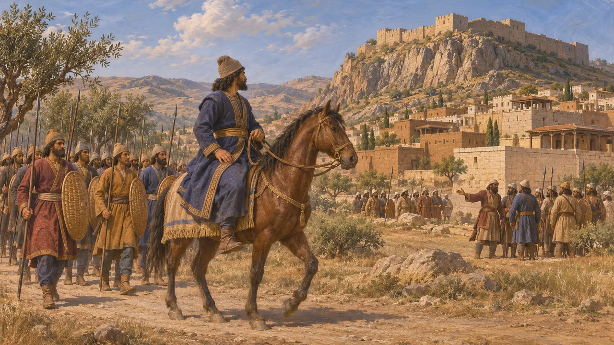
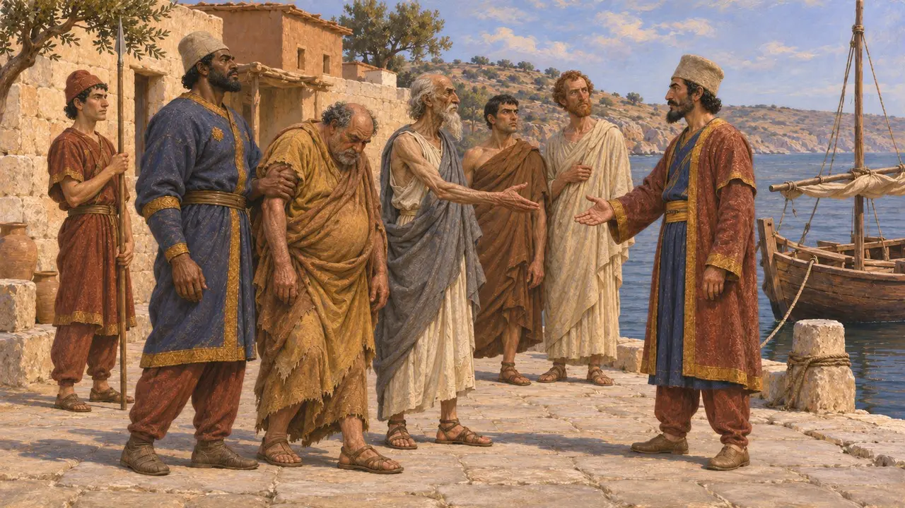
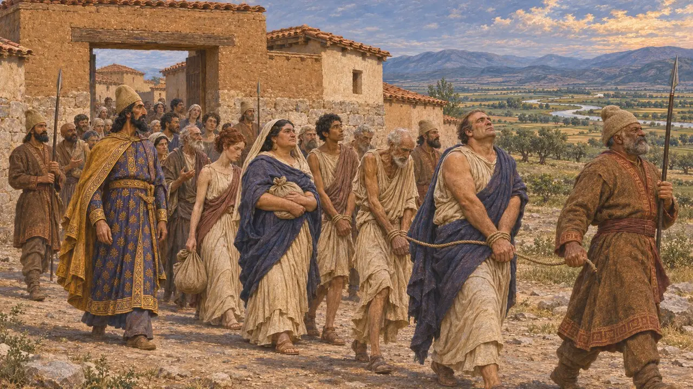
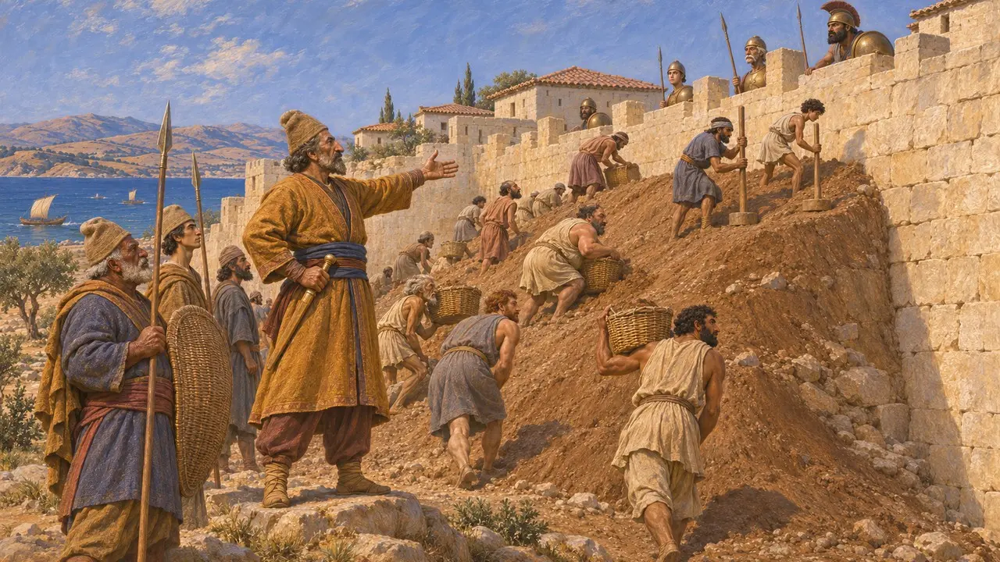
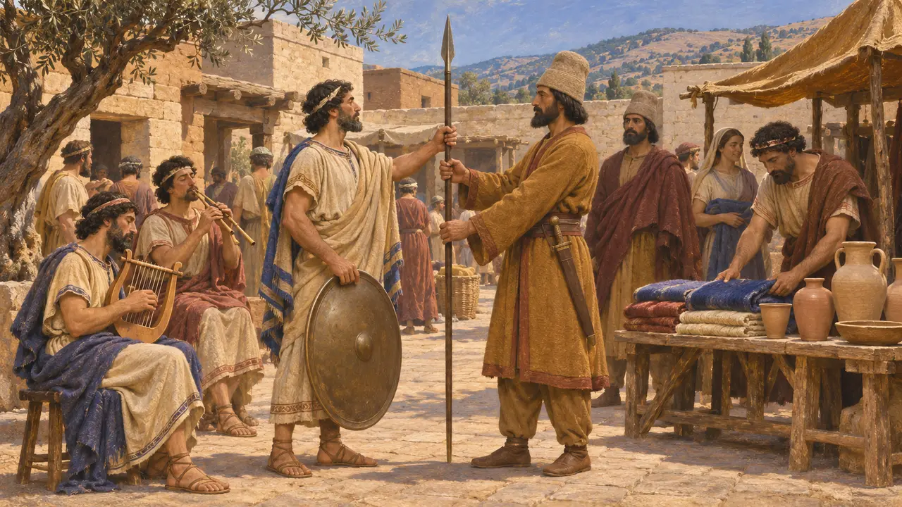
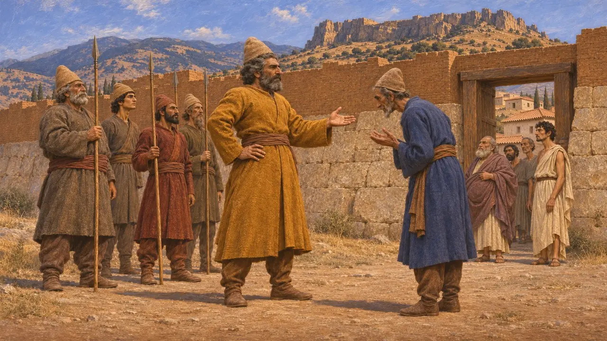

マザレス
紀元前546年頃、サルディスでのパクテュエスの反乱を鎮圧したキュロス配下のメディア人将軍
マザレスはキュロスに仕えたメディア人の指揮官である。ヘロドトスによれば、キュロスはサルディスを去った後に反乱を起こしたリュディア人パクテュエスの討伐にマザレスを派遣した。マザレスは近隣のギリシア人の都市を従え始めたが、その途上で没し、指揮権はハルパゴスが引き継いだという。
ゲームでは： 本作でマザレスの名が登場するのは、サルディス陥落と、ハルパゴスによるイオニア征服を扱う出来事記事のみ。固有の仕様は持たない。

サルディスへ送られた
古代の記述ヘロドトスによれば、キュロスはリュディア人パクテュエスにサルディスのクロイソスの財宝を託し、東へ向かった。するとパクテュエスはその金で兵を雇い、海岸から人々を呼び下ろして、城塞にいたペルシアの総督タバロスを包囲した。キュロスはマザレスに軍勢を授け、これを討伐させた。
Herodotus 1.153-156

パクティエスの逃亡
古代の記述ヘロドトスによれば、マザレスが迫ると、パクテュエスはキュメへ逃れた。キュメ人はブランキダイの神託を伺い、彼を引き渡すよう告げられたが、実際にはミュティレネへ、さらにキオスへと送り出した。キオス人は、アタルネウスの土地と引き換えに彼を引き渡した。
Herodotus 1.157-160

ギリシア人への懲罰
古代の記述ヘロドトスによれば、マザレスはパクティエスを助けたギリシア人を攻め、プリエネの住民を奴隷にし、マグネシアを含むマイアンドロス川の平野を荒らし回った。その後まもなく病に倒れて死んだ。
Herodotus 1.161

ハルパゴスが引き継ぐ
古代の記述ヘロドトスによれば、キュロスはそこで、同じくメディア人のハルパゴスを送り、指揮を執らせた。ハルパゴスは城壁に対して攻囲用の土塁を築いてイオニアの諸都市を攻略し、まずフォカイアから始めた。
Herodotus 1.162

リュディア人を懐柔せよとの進言
後世の伝説ヘロドトスによれば、クロイソスはキュロスに、リュディア人から武器を取り上げ、商人や楽人として暮らさせるよう進言したという。これは贅沢と軟弱さを戒めるギリシア人の教訓話であり、同時代のいかなる文書にも裏づけはない。
Herodotus 1.155-156

史料が語らないこと
係争中マザレスに関する事柄は、ほぼすべてヘロドトスに拠っている。ペルシアの碑文にも粘土板にも彼の名は見えず、地位も没年も定かではない。反乱はサルディス陥落の直後、紀元前540年代半ばごろとされるが、出来事の順序はヘロドトスをもとに復元されたものである。
P. Briant, From Cyrus to Alexander, 2002
出典
- Herodotus 1.153-162
- P. Briant, From Cyrus to Alexander, 2002
- M. Waters, Ancient Persia, 2014